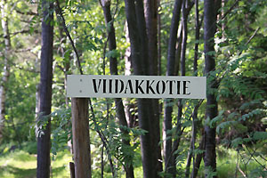
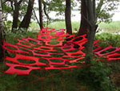
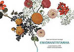
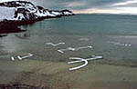
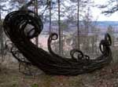
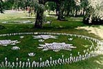
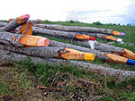
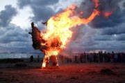

Online Exhibition April 2013: Reuse of the old spring mattress
Riitta Schildt´s and Sami Saralo´s Workshop (Orpaantulet) with youths: the spring mattress and lights
News: Virtual Gallery environmentalArt.net had, last year 2012, its 10th year of celebration. We are going to open during this year a new virtual gallery presenting finnish Recycled art. Our first Recycle artist 2013 is Susanna Autio. |
Exhibitions, Festivals:
MAA JA PAIKKA / LAND IN SITU
11. Ymp×â€ristצtaiden×â€yttely ja tapahtuma
Nahkialanj×â€rven ymp×â€ristצ & Kulttuurikeskus Laaksola Ryצdintie 2, Toijala (Akaa)
SAVE VARTIOSAARI -taideprojekti II Ilmainen soutuvenekuljetus Reposalmesta klo 12 alkaen!
Lצyd×â€t lis×â€tietoja viestin alaosasta ja osoitteesta www.savevartiosaariart.weebly.com.

Yst×â€v×â€llisin terveisin / Best Regards
KOLI- Environmental Art Festival 13.-19.5
Slash and Burn - Gallery - site specific art exhibition 15.6.- 30.10.2013
Project Manager Anne Pehkonen
The artists’ residence Ryyn×â€nen acts as a meeting place during the festival. It will provide the information about the events, participating artists and collaborators.
TAITEILIJAT KOLILLA 2013 Festivaaliin on kutsuttu 18 taiteilijaa sek׆Skandinavian maista kuin myצs Ven×â€j×â€lt×â€, Islannista sek׆Japanista. Taiteilijaresidenssi Ryyn×â€nen toimii festivaalin aikana info ja tapaamispaikkana. Projektin vet×â€j×â€n׆toimii kuvataiteilija Anne Pehkonen.
Kaskikalleria - ymp×â€ristצtaiden×â€yttely 15.6.- 30.10.2013
EnvironmentalArt.net Homepages
|


{kind=link}
{kind=link}
| Marja Hakala |  |
|
Kalle Hamm, Dzamil Kamanger |
 |
| Timo Jokela |  |
| Kaarina Kaikkonen |

|
| Pekka Kainulainen |

|
| Sauli Miettunen |

|
| Anne Pehkonen |

|
| Jaakko Pernu |

|
| Michael Rahikainen |

|
| Anni Rapinoja |

|
| Juha Rouhikoski |

|
| Kaisa Salmi |

|
| Riitta Schildt |

|
| Jenni Tieaho |  |
| Lea Turto |  |
| Hanna Vainio |

|
| Vinha-Jonna |  |
| Katja ײhrnberg |

|
|
N×â€yttelyryhm×â€t / |
 |
|
N×â€yttelyryhm×â€t / |
|
|
N×â€yttelyryhm×â€t / |
An exhibition collection of 20 artists, Adeleide Festival center 2007 |
|
|
An exhibition collection of 23 artists, Ala-Malmin puisto, Helsinki 24.08. - 28.09. 2007 |
|
Artists visited in Finland 07 |
|
|
FUMICO AZUMA, (Japan / London) |
|
|
Laura Feldberga (Latvia) |
|
|
Ojars Feldbergs (Latvia) |
Usefull seach for this site
Etsitkצ tietoja taiteilijoista tai teoksista.
K×â€yt׆hakukonetta (this Site) ! Sivuston kautta lצyd×â€t n. 60 taiteilijaa.
 ylצs
ylצs
info / EnvironmentalArt.net
- ymp×â€ristצtaiteilijoiden oma internet-palvelu.
Verkkogalleria julkaisee artikkeleita, uutisia, ymp×â€ristצtaiteilijoiden ilmoituksia, kotisivuja ja esittelyit׆sek׆teoskuvia taiteilijoiden nimiss׆ja lukuun. Sivupaikan ottajien oma nettiosoite on muotoa www.environmentalart.net/haluamasinimi. Kaivatessasi kotisivua ota yhteytt×â€: webmaster Lea Turto